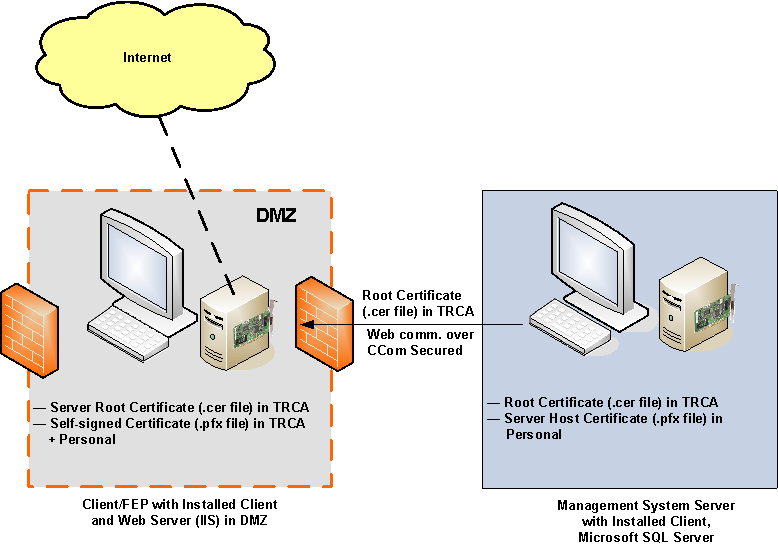
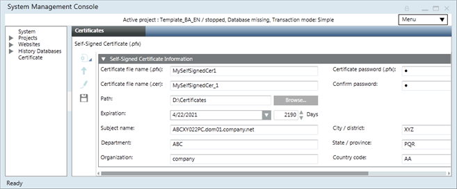
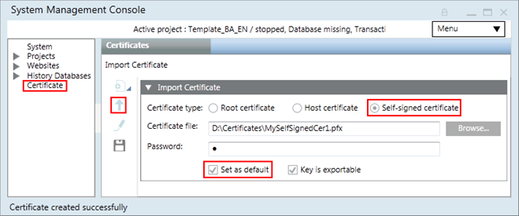
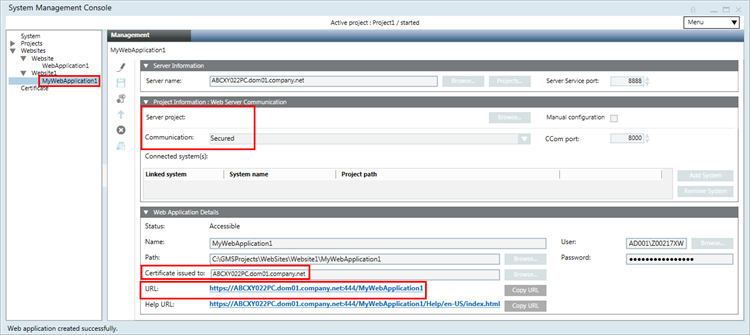
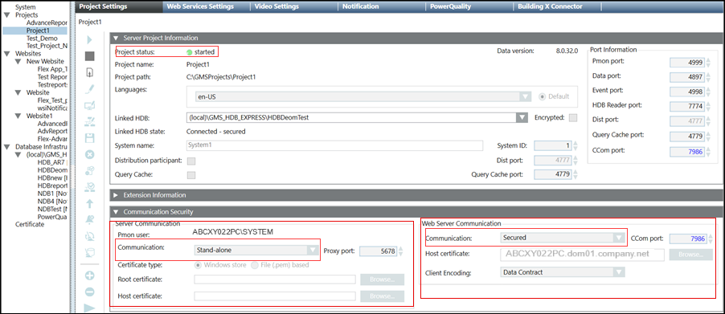

Setting up a Server and a Remote Web Server (IIS) in a DMZ Network
Scenario
You want to install and set up a Desigo CC system in a stand-alone configuration with a remote web server segregated in a DMZ network.
Server and a Remote Web Server (IIS) in a DMZ Network
A DMZ (demilitarized zone) refers to an area of a network, usually between two firewalls, where users from the Internet are permitted limited access over a defined set of network ports and to pre-defined servers or hosts. A DMZ is used as a boundary between the Internet and your company's internal network. The network DMZ is the only place on a corporate network where Internet users and internal users are allowed at the same time.
In a DMZ setup, the web server (IIS) and the Desigo CC server are hosted on separate machines that are on different networks, separated by firewalls.
In such a scenario, commercial SSL certificates are typically used for the web site on IIS. For verifying the signature of the Windows App client, the same certificate or a separate commercial or self-signed certificate, may be used. However, you can use the same certificate if the private key used to secure the web site is exportable.
The following section describes a typical deployment scenario for setting up a Desigo CC system with a remote web server (IIS) in a DMZ scenario.
Server Station
A single dedicated station with the following features:
- Desigo CC server is installed.
- Microsoft SQL is installed on the Desigo CC server.
- The server project folder is shared.
- The required certificates are imported in the Windows Certificate store:
- The root certificate is imported in the Trusted Root Certification Authorities store.
- The host certificate is imported in the Personal store.
- The host certificate used must have a private key; no private key is needed for a root certificate.
Remote Web Server (IIS) Station in a DMZ
- A dedicated station serving as web server for hosting the web site/application. To simplify the web site configuration, it is recommended that you install the Desigo CC client or FEP software on this machine.
- The web application user on the remote web server has access rights on the shared project folder on the server.
- The required certificates are imported in the Windows Certificate store:
- The root certificate of the host certificate provided for CCom port security is imported in the Trusted Root Certification Authorities store.
- The communication between the web server and the Windows App client is always secured. Therefore, creating the web site and the web application certificates are mandatory. Desigo CC supports using either the same or different certificates for the web site and the web application. This section describes how to configure the web server to use the same certificate for both the web site and the web application.
- The certificate and its private key must be imported into the Windows certificate store (in the Local Machine\Personal store; its root certificate must be imported in the Local Machine\Trusted Root Certification Authorities (TRCA) store). The private key must be marked to be exportable.
- If different commercial certificates are used for creating the web site and web application, then both must be present in the Trusted Root Certification Authorities store and the Personal store of the Windows Certificate store.
Security
- Secure server/remote web server (IIS) deployments require high security configuration setup.
Deployment Diagram

Complete the following procedures in the specified order.
Setting up a Remote Web Server (IIS) Station in a DMZ Scenario
- On the remote web server (IIS) station in DMZ, ensure the following is done:
— The web application user has rights on the shared project folder and on the individual folders within the project (devices, graphics, libraries, profiles, and shared) on the server.
— The same root certificate (.cer file) of the CCom host certificate as on the Server are available on the web server (IIS). - IIS is installed and you have removed the default web site from IIS.
- Using the distribution media, install the setup type —Client or FEP.
- Launch SMC.
- In the SMC tree, select the Certificates node.
- Click Import
 .
.
a. In the Import Certificate expander, click Browse and select the root .cer file of the server root certificate.
b. Select Set as default. - Click Save
 .
. - The root certificate is imported in the Trusted Root Certification Authorities store of the Windows Certificate store on the client/FEP station.
- Click Create Certificate
 and Create Self-Signed Certificate (.pfx)
and Create Self-Signed Certificate (.pfx)  .
. - In the Self-Signed Certificate Information expander, enter the details into the following fields: Certificate file name (.pfx) and (.cer) and the Password, and Path.
By default, the Subject name field displays the full computer name of the host machine (including domain name if the server machine is in a domain). For example, ABCXY022PC.dom01.company.net. - Click Save .
- A self-signed certificate (.pfx and .cer files) is created at the specified location.

- Click Import :
a. In the Import Certificate expander, click Browse and select the .pfx file of the self-signed certificate.
b. Select Set as default.
c. Select Key is exportable. - Click Save .

- The self-signed certificate is imported in the Trusted Root Certification Authorities store and the Personal store of the Windows Certificate store.
- In the SMC tree, select Websites node.
- Click Create Web site .
- The Details expander displays with pre-populated information for the: Name, Path, Host name, and Ports fields. Ensure that the ports are not in use. The Certificate issued to field displays the default set self-signed certificate. This web site certificate is used for secure communication over the HTTPs port. In addition, provide the following Web site details:
a. Browse and select a web site user. This user must be a member of the IIS_IUSRS group. Otherwise, a message displays asking you to add the selected user to the IIS_IUSRS group or select another user from the IIS_IUSRS group.
b. Provide the valid Password of the selected user. - Click Save .
- A confirmation message displays.
- Click OK.
- The new web site node is created as a child under the Websites node. It is selected by default.
- Click Create Web Application .
- The details in the Web Application Details expander display with pre-populated information for some fields. By default, the values for the Certificate issued to, User, and Password fields display the same information that was configured for the parent web site. The Communication and the CCom port fields are pre-filled as per the selected server project. The Certificate issued to field displays by default the same self-signed certificate that was configured during web site creation It is used for signing the Web application. In addition, enter values in the following fields:
- Service port matching the Service port on the server,
- Server name by browsing and selecting the server using the Workstation Picker dialog box.
The server name provided must match the subject name of the CCom host certificate configured on the server. - Server project name by clicking Projects
- Shared project path
- Web application Name
- Click Save .
- A confirmation message displays.
- Click Yes.
- The web application URLs (https and http) are created.
- Click the web application URL and install the web application certificates.
NOTE: You can also access the URL from any other machine (without securing the web communication) and work with Windows App client. - Launch the Windows App client and work with it.

Setting up the Server Station
- From the distribution media, install the setup type as Server.
- Launch SMC.
- In the Console tree, select Certificates and do the following:
- Click Create Certificate and then select Create ROOT Certificate (.pfx) .
- In the Root Certificate Information expander, enter the details for the: Certificate file name for (.pfx) and (.cer), along with their password, and path on the disk. By default, the Subject name field is set to GMS Root Certificate.
- Click Save .
- A root certificate (.pfx and .cer files) is created and stored at the configured path.
- Click Create Certificate and then select Create Host Certificate (.pfx) .
- In the Host Certificate Information expander, enter the details for the: Root certificate along with its Password, Certificate file name (.pfx) and its Password, Certificate file name (.cer), the Path on the disk, and so on.
By default, the Subject name field displays the full computer name of the server (including the domain name if the server machine is in a domain). For example, ABCXY022PC.dom01.company.net. - Click Save .
- A host certificate (.pfx and .cer files) for the server using the server root certificate is created at the configured path.
- Click Import and do the following:
a. In the Import Certificate expander, click Browse to select the root .cer file of the root certificate.
b. Select Set as default. - Click Save .
- The root certificate is imported in the Trusted Root Certification Authorities store of the Windows Certificate store.
- Click Import and do the following:
a. In the Import Certificate expander, click Browse to select the host .pfx file of the host certificate for the Server.
b. Provide the password for the host certificate.
c. Select Set as default.
d. Select Key is exportable. - Click Save .
- The host certificate is imported in the Personal store of the Windows Certificate store.
- In the Console tree, select Projects.
- Do one of the following:
- Click Restore Project Template
 to restore a project template on the server.
to restore a project template on the server. - Click Create Project to create a new project.
NOTE: If you have a project backup, you can restore it using the Restore Project icon. However, before restoring a project make sure that all the extension modules included in the project backup are installed on your system. Otherwise, a warning message will display.
icon. However, before restoring a project make sure that all the extension modules included in the project backup are installed on your system. Otherwise, a warning message will display. - In the expanders that display, fill in the required details such as project name, user credentials, and HDB for the new project.
NOTE: If HDB is already linked to another project, a confirmation message displays when you save the project. - Click Save Project .
- A confirmation message displays.
- Click OK.
- The selected project template is restored (or a new project is created) and a new node is created and selected in the Console tree.
- (Only applicable in case of restored projects and the project status is Outdated-check on upgrade) Click Upgrade .
- A confirmation message displays.
- Click OK.
- The project is upgraded to the current schema version.
- Click Edit
 .
. - In the Security expander for the CCom Port Settings section, set the Web communication field to Secured. Ensure that Client/Server communication mode is Stand-alone.
- The Host certificate field displays the default set host certificate.
- Click Save Project .
- A message displays indicating that you must edit, align with the server and save the web applications client/FEP linked to this project.
- Click OK.
- A project is saved with Client/Server communication as Stand-alone and Web communication as Secured.
- If this is the first project, it becomes active automatically.
- Click Start Project
 to start the project.
to start the project. - To work with a remote web server (IIS) in a DMZ scenario, you must share the server project folder with the web application user.
